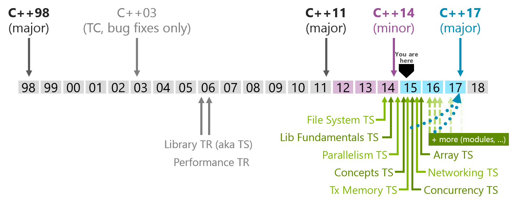

Introduction.cpp
“C makes it easy to shoot yourself in the foot; C++ makes it harder, but when you do it blows your whole leg off.” ― Bjarne Stroustrup
Sylabus.cpp
void main() { if(!prerequisites()) exit(ERROR_NOT_READY); if(!expectations()) exit(ERROR_NOT_MOTIVATED); if(!content()) exit(ERROR_WRONG_CONTENT); if(!references()) exit(ERROR_NEEDS_SAFARI_ACCOUNT); }
bool prerequisites() { return knowsAnotherLanguage(); }
bool expectations() { auto meetsExpectations = true; meetsExpectations = willingToTryNewThings() ? meetsExpectations : false; meetsExpectations = canUseGoogle() ? meetsExpectations : false; meetsExpectations = notExpert() ? meetsExpectations : false; return meetsExpectations; }
bool content() { auto hours = 8 * 5 * 3; //8 hours a day, 5 days a week, 3 weeks Course cppClass(hours); Section fundamentals; fundamentals.addLecture("History of C++"); fundamentals.addLecture("The Basics... a refresher") fundamentals.addLecture("Types"); fundamentals.addLecture("User defined types"); fundamentals.addLecture("Exceptions"); fundamentals.addLecture("Concrete Classes"); fundamentals.addLecture("Abstract Classes"); fundamentals.addLecture("Templates"); cppClass.addSection(fundamentals); Section stdLib; stdLib.addLecture("Overview"); stdLib.addLecture("STL Containers"); stdLib.addLecture("std::memory"); stdLib.addLecture("std::string"); stdLib.addLecture("std::thread"); stdLib.addLecture("regex") cppClass.addSection(stdLib); Section advanced; advanced.addLecture("Template Metaprogramming by Example"); advanced.addProject("????") cppClass.addSection(advanced); }
Gitlab
- Make sure everyone has an account.
- Course wiki
- Benchmarking Library
- Unit Test Library
- CppCoreGuidelines.
Code of Conduct
- Everyone is expected to do their own work.
- Everyone is expected to not share their work with their neighbor until after an assignment is done.
- If you get code off the internet put a comment in the code saying where you got it.
- Ask Questions!
- My personal books do not leave the classroom (unless it is with me!)
Instructor: Jeff Scaparra
Jeff@Scaparra.com
A Brief History of C++
“There are only two kinds of languages; the ones people complain about and the ones nobody uses.” ― Bjarne Stroustrup
When we take about C++ we have to really specify what iteration of C++ we are talking about. C++ has changed dramatically over the years and even through recent times. It is important to understand the evolution of C++ and the state of the standards, libraries, and compilers that you will depend on to do your jobs. You will find many projects that are built on top of old runtimes for various reasons. The standard process has be revolutionized and moves quickly now. In this decade there have been two standards release that dramatically changed the language and there will be one more with C++17. This is why we have a section on the history of C++.
Current State of C++
In 1970 Dennis Ritchie Introduces C
- Prior to this:
- Systems programmers were expected to master machine language
- Systems programmers wrote in assembly
- Fortran and Cobol existed for domain specialist not "systems" programming
- C gave systems programmers:
- A high level language that was portable.
- Enough control to do most systems programming
What were Cobol and Fortran domain languages for?
COmmon Business Oriented Language - as the expanded acronym indicates, COBOL is designed for developing business, typically file-oriented, applications.
Fortran "Formula Translation" - numeric computation and scientific computing.
C with Classes
Bjarne Stroustrup at Bell Labs develops his own language.
- Motivated by higher-level programming languages like Simula
- Simula supports object-oriented programming.
- Based on C because of the power of C
- C with classes ultimately turns into C++
- C++ was a superset of C but had higher level objects
- This allowed users to create their own types.
"Bjarne Stroustrup, a Dane with a Ph.D. from Cambridge University (England), had used the Simula language for distributed systems simulations in his research. He was disappointed with its poor performance, however, and in 1979 when his new employer, AT&T Bell Labs, said "Do something interesting", he decided to infuse the C language with some Simula features he had grown accustomed to -- most notably classes -- and thus "C with Classes" was born. It caught on within AT&T, was dubbed C++, and then proceeded to become a support burden for its inventor. -- taken from http://www.stroustrup.com/cuj_interview.html
Factoids
- First C with classes compiler was called "Cfront" which was derived from a C compiler called CPre
- Cfront was written mostly in C with Classes, making it a compiler that could compile itself.
- The name C with classes was changed in 1983 to C++ and new features were added
- virtual functions
- function overloading
- references
- const
- single-line comments
Road to Standardization
- 1985 "The C++ Programming Language" first edition is released
- Popularity soars into the 90s largely credited to OOP and GUI programming
- A decision to standardize the language is made and group has first meeting in 1989
- The language will be controlled by a group of people instead of one member.
- Stroustrup remains an influential member to the ISO C++ committee to this day.
- First goals were to standardize iostreams, add templates, and exceptions.
- The 1985 was a very important reference as the language wasn't standardized yet.
Lack of standard library
- 1993 Standard was almost complete.
- Committee felt there wasn't a good enough standard library.
- Alex Stepanov gave a presentation on generic programming which put templates to good use.
- By the next meeting Stepanov had refined the "Standard Template Library".
- The committee liked it even if it delayed the completion of the standard.
- It wasn't until 1998 that the C++ standard was finalized.
This were winding down in 1993 but uneasiness about a lack of robustness in the standard library cause .
Boost
- Also in 1998 Beman Dawes with Library Working Group chair, set up the Boost Libraries.
- Libraries that might be candidates for standardization could be vetted and popularize.
- Boost is separate from the standards process.
- Library writers don't have to submit their libraries to boost but is usually happens that way.

C++ as a superset of C
- Pros
- Instant access to all libs written in C
- Introduce safer ways to deal with resources RAII
- Higher-level concepts (Generic but most of this class will be teaching this.)
- Cons
- Inherits all of C's baggage
- Making more powerful user-defined types of C++ integrate with C so that they behave the same was also difficult.
I thought this was the appropriate place for this because before C++11 this is largely how C++ was thought of.
C baggage... Memory management... Non-safe functions... Redundant non-generic code. Unsafe returned values. Uninitialized variables. Unsafe arrays.
C++03
Not much changed...
Really.
The differences are so few and so technical that they ought not concern users [1].
C++0x
"C++0x is a relict of the days where I and other, hoped for a C++08 or C++09. Think of 'x' as hexadecimal (i.e., C++0B == C++11)" - Stroustrup
- C++11 incorporates a lot of new features and getting all of that in took time.
- Concepts were voted out in 2009 because of their complexity and the fact that they would have further delayed the release of the standard [2].
C++0x was the original name of the next version of the standard. It was labeled C++0x because it was supposed to be done sometime in the 2000s.
C++11 Language Features
"Surprisinglly, C++11 feels like a new language" - Stroustrup
Some of the features:
- initializer-list
- uniform initialization
- template aliases
- rvalue references and move semantics
- defaulted and deleted functions
- variadic templates
- auto
- inherited constructors
- decltype
IMHO the best feature and the one that added the most performance was rvalue references and move semantics.
C++14 Language Features
- Return type deduction for functions
- Generic lambdas
- Extended capturing in lambdas
- Revised restrictions on constexpr functions
- constexpr variable templates
http://cpprocks.com/an-overview-of-c14-language-features/
not as much stuff as C++11 but didn't take as long to get out. Notice concepts still aren't in the language and were voted out of C++17 as well.
State of the compiler
There are three dominant compilers
- MSVC - Microsoft Visual C++
- G++ - Gnu C++ compiler
- clang - An opensource frontend, part of the LLVM compiler Infrastructure.
Add links...
Add information about each and how they related (maybe a link to a comparison with a break down of supported features)
I didn't want to put the features supported of each in this slide as that will change over time.
Resources
A look at the C++ type system

A good type system should stay out of the way of a programmer. It should allow a programmer to build their own types that are representative of the problem that they are trying to solve. It should allow these types to be used in the same way as built in types. C++ provides a rich set of types through the normal primitives as well as its standard library. C++ also provides ways to extend these types and to create user defined types which can be used in much the same way. This presentation is a look at the different types provided by C++.
std::is_fundamental
- std::is_arithmetic: all types that can be used for math.
- std::is_floating_point: float, double, long double
- std::is_integral
- bool
- character types: char, signed char, unsigned char, char16_t, char32_t, wchar_t
- signed integers: short int, int, long int, long long int
- unsigned integers: unsigned short, unsigned int, unsigned long, unsigned long long
- std::is_void:
- std::is_null_pointer: std::nullptr_t
We are using <type_traits> to talk about the C++ type system.
http://en.cppreference.com/w/cpp/header/type_traits
Each of the std::is_* represents a type trait in the standard library that can be used to evaluate a type. You will get more exposure to these in follow on assignments.
std::is_compound
- std::is_reference: reference types
- std::is_lvalue_reference: lvalues to objects or functions
- std::is_rvalue_reference: rvalues to objects or functions
- std::is_pointer: pointer types to data or functions (not tied to objects)
- std::is_member_pointer: pointer to data or function members of objects
- std::is_array: array types
- std::is_function: function types
- std::is_enum: enumeration types
- std::is_class: class types
- std::is_union: a special class type
Machine Architectures and Built-in Types
There are four main data models in use today.
- 32-bit systems
- LP32 or 2/4/4 (int is 16-bit, long and pointer are 32-bit)
- Win16 API
- ILP32 or 4/4/4 (int, long, and pointer are 32-bit)
- Win32 API
- Unix and Unix-like systems (Linux, Mac OS X)
- LP32 or 2/4/4 (int is 16-bit, long and pointer are 32-bit)
The data model is an implementation choice of computer/software engineers about the sizes of fundamental types.
Other models do exists but are very rare. For example ILP64 (8/8/8: int, long, and pointer are 64-bit) do exists but only appeared in some early model 64-bit Unix systems (e.g. Unicos on Cray).
The Win16 API is a legacy system that was used in Windows 1.0 to Windows 3.11, and for backwards compatibility is support to Windows 95/Windows ME.
Machine Architectures and Built-in Types
There are four main data models in use today.
- 64-bit systems
- LLP64 or 4/4/8 (int and long are 32-bit, pointer is 64-bit)
- Win64 API
- LP64 or 4/8/8 (int is 32-bit, long and pointer are 64-bit)
- Unix and Unix-Like systems (Linux, Mac OS X)
- LLP64 or 4/4/8 (int and long are 32-bit, pointer is 64-bit)
This class will mostly be using ILP32 and LLP64 as we are on windows. I will work to show LP64 as well.
What data model does C++ use?
- C++ compiles and runs on all of these systems.
- Can the standard give us any guarantees that would be valid on all systems?
- Is there any way to get portable types?
C++ guarantees bounded types
Signedness
- signed - target type will have signed representation (this is the default).
- unsigned - target type will have unsigned representation.
Size
short int <= int <= long int <= long long int
- short - at least 16 bits.
- long - at least 32 bits.
- long long - at least 64 bits. (since C++11)
A portable type model
What if your in a situation where you need to grantee that you type is a certain size on all architectures.
#include <cstdint> //since C++11 #include <stdint.h> //before C++11 uint32_t is_a_32_bit_unsigned_int; uint8_t is_a_8_bit_unsigned_char; int64_t is_a_64_bit_signed_int; uint_fast16_t is_whatever_the_fastest_16bit_type_for_the_machine_is;
C++ Floating Point Types
- float - single precision. Usually IEEE-754 32 bit floating point type.
- double - double precision. Usually IEEE-754 64 bit floating point type.
- long double - extended precision.
- Doesn't have to map to types mandated by IEEE-754.
- Usually 80-bit x87 floating point type on x86 and x86-64 architectures.
x87 is a floating-point subset of the x86 architecture instruction set. Originated as an extension of the 8086 instruction set. This was back with coprocessors would work in tandem with x86 CPUs. The orginal x87 processor was 5 MHz. Todays processors are able to do these computation over 50,000 times faster.
User defined types
C++ allows programmers to create their own types. The standard library is a collection of user defined types.
- Classes
- Structs (Really a type of class)
- Enums
- Unions
We will cover classes and structs in their own lecture.
C Style Un-scoped Enums
enum Color {red, green, yellow}; Color light = red; switch(light) { case red : cout << "red light\n"; break; case green : cout << "green light\n"; break; case yellow: count << "yellow light\n"; break; }
Unscoped Enums with initializers
enum Foo {a, b, c=10, d, e=1, f, g = f+c }; //a=0, b=1, c=10, d=11, e=1, f=2, g=12
Problems with enums
- Polluted the global scope
- No two enums could have the same names for their members.
- Collisions could happen when pulling in other peoples code.
C++11 and later Enums
enum name: type {enumerator = constexpr, enumerator = constexpr, ... }; // or better yet. enum class name: type {enumerator = constexpr, enumerator = constexpr, ...};
C++11 Enum Example
enum class Light : char {red='R', green='G', yellow='Y'}; enum class Color : int {red=100, yellow, green, blue, brown}; int main() { Color color = Color::red; Light light = Light::red; return 0; }
Unions
typedef union ARGB { uint32_t color; struct componentsTag { uint8_t a; uint8_t b; uint8_t g; uint8_t r; }components; }pixel; int main() { pixel p; p.color = 0x334455AA; std::cout << std::hex; std::cout << "R: 0x" << static_cast<short>(p.components.r) << "\n"; std::cout << "G: 0x" << static_cast<short>(p.components.g) << "\n"; std::cout << "B: 0x" << static_cast<short>(p.components.b) << "\n"; std::cout << "A: 0x" << static_cast<short>(p.components.a) << "\n"; return 0; }
Unions can also be useful to building a variant type of basic types. Unions can't hold complex types in pre C++11. C++11 allows for one data member that can have a default constructor.
Literals
There are many more literals in C++ than C. In C++ you can even create your own literals. C++ provides literals for:
- Integers
- Floating Point
- Character
- String
- nullptr (C++11)
- user defined (C++11)
Integer Literals
- decimal-literal: 123432 (a literal number)
- octal-literal: 034532
- hex-literal: 0xDEADBEEF
- binary-literal: 0b1110010101101 (C++14)
- integer suffix
- unsigned suffix: u or U (i.e. 0xDEADBEEFU or 123432u)
- long-suffix: l or L (i.e. 0xDEADBEEFL will be 0x00000000DEADBEEF on LP64)
- long-long-suffix: ll or LL (C++11)
- optionally single quotes (') may be inserted between the digits. These are ignored by the compiler. (C++14)
Floating Point Literals
- digit-sequence: whole number without a decimal seperator, exponent not optional 1e10, 1e-5L
- digit-sequence: 1.e-1 (in this case the exponent is optional)
- digit-sequence: 3.14, 1.42e100
- hex-digit-sequence: 0x1ffp10 or 0x1ff.p10 or 0x0.12fp-1 exponent is never optional for hex-digit-sequences
- suffix
- (no suffix) - defines double
- f or F - defines float
- l or L - defines long double
Character Literals
- 'c-char' - char
- u8'c-char' - UTF-8 char
- u'c-char' - UCS-2 character - char16_t
- U'c-char' - UCS-4 character - char32_t
- L'c-char' - wide character - implementation-defined
- 'c-char-sequence' : Can be combined with the above prefixes.
Character Literal Escape Sequences
- \': single quote
- \": double quote
- \?: question mark
- \\: backslash
- \a: audible bell
- \b: backspace
- \f: form feed
- \n: new line
- \r: carriage return
- \t: horizontal tab
- \v: vertical tab
- \nnn: arbitrary octal value
- \Xnn: arbitrary hex value
- \Unnnn: Universal character name
- \Unnnnnnnn: universal character name
Of the octal escape sequences, 0 is the most useful as it represents the terminating null character in a null-terminated string.
String Literals
Mostly the same as character literals
- "unescaped or escaped characters"
- L"unescaped or escaped characters"
- u8"unescaped or escaped characters" (C++11)
- u"unescaped or escaped characters" (C++11)
- U"unescaped or escaped characters" (C++11)
- R"delimiter(raw characters)delimiter" (C++11)
//Raw String Examples auto str = R"foo("this is a raw string"/"I (can) use all kinds of 'characters'")foo";
nullptr
A literal that represent NULL.
Why would we want that we already have NULL and 0?
void foo(int a) { //do something with a } void foo(char* a) { //do something with a } int main() { foo(0); //calls foo(int) foo(NULL); //calls foo(int) foo(nullptr); //calls foo(char*) }
TODO: Add more reason for nullptr here.
Pointers, References, and const oh my!
- Pointers: Are used to hold memory addresses can be dereferences to access the thing at an address.
- References: Are syntactic sugar, so that code is easier to read and write.
- A pointer can be re-assigned any number of times while a reference can not be re-seated after binding.
- Pointers can point to nowhere, references always refer to an object. (must be initialized)
- You can't take the address of a reference like you can a pointer.
- There is no reference arithmetic.
Pointers, References, and const oh my!
const declares variables that can't be modified. Pay careful attention to applying const to pointers.
- const int* is a pointer that can be re-assigned but points to constant data.
- int* const is a pointer that can't be re-assigned as it is const.
- const int* const is a pointer that is const and points to constant data.
const int a = 0xDEADBEEF; const int b = 0xCAFEF00D; int* const ptr1 = &a; //ERROR storing pointer to constant data in non-const pointer. const int* ptr2 = &a; ptr2 = &b; const int* const ptr3 = &a; ptr3 = &b; //ERROR pointer is const and can't be modified.
Pointers, References, and const oh my!
Example
void bar(const int& foo) { //This prints the value of fooptr below. std::cout << "foo is at" << &foo << "\n"; } int main() { int foo = 0xCAFEF00D int& fooref = foo; int* fooptr = &foo; fooref += 0xEE0; //foo is now 0xCAFEFEED bar(foo); }
constexpr (C++11)
Concept: Value is not only constant but is also known at compile time! Reality: You can't assume the results of a constexpr function are const, nor that they are known at compile time.
- constexpr can be applied to variables and functions.
- object
- function
- function templates
constexpr int beef = 0xCAFEBEEF; constexpr int& beefref = beef; //bound to reference beef (can't be changed) constexpr int* beefptr = &beefref; //because beefref is a reference it can be used like beef static_assert(beef == beefref && beef == *beefptr, "These should all be equal here"); constexpr int square(int x) { return x*x; } int a[square(2)]; //allowed because of constexpr
static_assert is a compile time assert that will output the message argument as an error if the assertion fails. static_assert must be given a boolean condition that is constexpr.
constexpr objects (C++11)
- objects are in fact const
- Values are known at translation
- Translation consists not just of compilation but also of linking.
- Because known at compilation time:
- Values can be placed in Read-only memory
- Integral values that are const and known at compile time can be used where C++ requires integral constant expressions * std::array, Template arguments, array sizes, etc...
- Note that const does not offer the same guarantee as constexpr, because objects need not be initialized with values known at compile time.
class Point { double x_, y_; public: constexpr Point(double x = 0 , double y = 0) noexcept : x_{x}, y_{y} {} constexpr doube xValue() const noexcept {return x_;} constexpr double yValue() const no except {return y_;} void setX(double newX) noexcept {x_=newX;} void setY(double newY) noexcept {y_=newY;} }; constexpr Point p1(9.4, 27.7); constexpr Point p2(28.8, 5.3); constexpr midpoint(const Point& p1, const Point& p2) noexcept { return { (p1.xValue() + p2.xValue) / 2, (p1.yValue() + p2.yValue) / 2 }; } constexpr Point mid = midpoint(p1, p2); //THIS EXIST IN READ ONLY MEMORY!!!
constexpr functions (C++11)
- shall have exactly one return statement.
- return type shall be a literal type. (not void)
- parameters shall be literal types.
- function body shall be a compound-statement of the form {return expression;}
- C++14 lifts this restriction
- In C++11 you can get a little more bang utilizing "? :" and recursion.
- Returns a constexpr result if the values of the arguments passed to constexpr are known at compile time.
- If called with values that are not known acts as a normal function.
constexpr int square(int x) { return x*x; } //OK constexpr long long_max() { return 2147483647; } //OK constexpr int abs(int x) { return x < 0 ? -x : x; } //OK constexpr void f(int x) { //... do stuff } //ERROR: return type is void constexpr int prev(int x) { return --x; } //ERROR: Use of decrement works with clang constexpr int g(int x, int y) //ERROR: C++11 doesn't allow this but C++14 does! { int r = 1; while (--n ) r *= x; return r; }
Runtime-Sized Arrays C++14
void fun(int i) { int array[i]; //This is ok in C++14 }
decltype
decltype(e) deduce and returns the type of its argument e.
- If the expression e refers to a variable in local or namespace scope, a static member variable or a function parameter, the the result is that variable's or parameter's declared type.
- If e is a function call or an overloaded operator invocation, decltype(e) denotes the declared return type of that function.
- Otherwise, if e is an lvalue, decltype(e) is T&, where T is the type of e; if e is an rvalue; the result is T.
auto c = 0; //c has type int auto d = c; //d has type int decltype(c) e; //e has type int, the type of the entity named by c decltype((c)) f = c; //f has type int&, because (c) is an lvalue decltype(0) g; //g has type int, because 0 is an rvalue
These semantics were designed to fulfill the needs of generic library writers, while at the same time being intuitive for novice programmers, because the return type of decltype always matches the type of the object or function exactly as declared in the source code. More formally, Rule 1 applies to unparenthesized id-expressions and class member access expressions. For function calls, the deduced type is the return type of the statically chosen function, as determined by the rules for overload resolution.
auto (C++11)
auto is a generic type that use type deduction to figure out the type at compile time. Auto has the following features.
- Must be initialized.
- Adapts well to refactoring.
- Efficient by default (no implicit conversions)
- Generally simpler and less typing.
- Defaults to by value.
int foo(int a, double b, char* c); int bar(int, double, char*); int main() { int (*fp)(int,double,char*) = &foo; // standard function pointer. auto auto_fp = foo; // function to pointer conversion const auto auto_fp2 = &foo; // equivalent to auto_fp auto& auto_fr = foo; // reference fp = &bar; auto_fp = &bar; auto_fp2 = bar; //ERROR would work if not const. auto_fr = bar; //COMPILATION ERROR }
Type Casting
C-style casts actually represent different types of cast in one operator
- static-cast - usually safe
- const-cast - dangerous
- reinterpret-cast - dangerous
C++ separates these all out for safety reasons. C++ also adds one more type of cast.
- dynamic-cast
Widening Conversions (promotion)
These are safe to do because there is no potential for a loss of data. Because these are safe, the compiler will preform them silently and not issue any warnings.

Narrowing Conversions (coercion)
These are the opposite of a widening conversion. Because they are a cast from a larger type to a smaller one there is a possibility for data loss, making the conversion potentially unsafe. If your sure that the conversion is ok and there will be no loss of data, use an explicit cast to get rid of the compiler warning.
int i = INT_MAX + 1; //integer overflow int j = 1.9f; //possible loss of data
I had to increase the warning level to 4 in visual studio to get these warning to show up.
static_cast<new_type>(expression);
This is allowed when there is a valid conversion in the language, or an appropriate constructor that makes it possible. The danger with static cast is casting down between inherited classes and narrowing conversions.
- static_cast are checked at compile time only
- static_cast return an error when trying to cast between things that are incompatible
- static_cast can be used to cast between pointer to base and pointer to derived
- static_cast can't tell if it is safe at runtime.
- dynamic_cast should be used to these situations to do runtime checks to see if the conversion is safe.
unsigned int big = 0xDEADBEEF; short a = big; //conversion from 'int' to 'short', possible loss of data short b = static_cast<short>(big); //no error
const_cast<new_type>(expression);
Usually a sign of a bad design and shouldn't be used in new projects. The purpose of const is to keep a developer from modifying the argument. const_cast removes this restriction and breaks promises to a user that you wouldn't modify the data.
- can remove const or volatile modifiers
- only really helpful with legacy APIs that are not const correct. * APIs without a const interface that don't modify anything.
const unsigned int a = 0xDEADBEEF; unsigned int& b = const_cast<unsigned int&>(a); b += 1; //a and b == 0xDEADBEF0;
reinterpret_cast<new_type>(expression);
This is also usually a sign of bad code.
Converts between types by reinterpreting the underlying bit pattern.
- Does not compile to any CPU instructions
- Simply instructs compiler to teat a series of bytes as something else.
int i = 7; char* p2 = reinterpret_Cast<char*>(&i); if(p2[0] == '\x7') std::cout << "This system is little-endian\n"; else std::cout << "This system is big-endian\n";
Smart Pointers!
Smart pointers are a better way to utilize memory in C++. They overcome many of the problems with normal pointers and better express the meaning of a particular pointer. It is still valid to pass pointers in C++ but this conveys nothing about ownership. The smart pointers that we will be discussing were added to the standard in C++11.
- std::share_ptr<type_pointed_too>(pointer);
- std::weak_ptr<type_pointed_too>(pointer);
- std::unique_ptr<type_pointed_too>(pointer);
All of these types are a part of the standard library.
Problems found with normal pointers
- Knowing who owns the pointer, i.e. who is responsible for freeing the memory.
- Forgetting to free the memory.
- Freeing the memory more than once.
- Not initializing memory.
std::shared_ptr<type>
Multiple people own me!
- Shared pointer introduces a small cost to do reference counting.
- It keeps track of the number of users
- When all users are done with it, it frees the memory.
- Can be created with make_shared<type>();
void foo(shared_ptr<int> bar) { std::cout << *bar << std::endl; } int main() { auto bar = std::make_shared<int>(0); std::cout << "Enter a number: "; std::cin >> *bar; foo(bar); return 0; }
One important thing to note is that there are no news or deletes in this code. There is nothing that needs to be reviewed to find all cases that we may need to free our dynamic memory. It is all handled by the shared_ptr.
std::unique_ptr<type>
Only one can own me!
- Only one indirection compared to a raw pointer. (almost no overhead)
- Can not be copied or assigned.
- Can only be moved (meaning it is fast and there is only one copy).
- std::move leaves the state of the object moved as undefined.
- testing with unique_ptr shows that the default deleter will set the moved from unique_ptr to nullptr.
void foo(std::unique_ptr<int> bar) { std::cout << *bar << std::endl; } int main() { auto bar = std::make_unique<int>(0); std::cout << "Enter a number: "; std::cin >> *bar; foo(std::move(bar)); //bar is nullptr return 0; }
std::weak_ptr<type>
Nobody owns me... yet
- weak_ptr can be used to hold a weak reference to a shared_ptr.
- They don't increase the ref count of the shared_ptr
- The shared_ptr may be free'd even while a weak_ptr exists.
- weak_ptr must be promoted to a share_ptr in order to actually use the data.
std::weak_ptr<int> gw; void f() { if (auto spt = gw.lock()) { // Has to be copied into a shared_ptr before usage std::cout << *spt << "\n"; } else { std::cout << "gw is expired\n"; } } int main() { { auto sp = std::make_shared<int>(42); gw = sp; f(); // 42 } f(); // gw is expired }
An Overview of the Standard Template Library
The heart of the C++ standard library is the STL. * Generic library * Allows users to take advantage of data structures and algorithms without knowing how they work. * All components are templates
Parts of the STL
- Containers: Used to manage collections, each container has its own advantages and disadvantages.
- Iterators: A generic way to step through the containers. Can be thought of as a type of pointer. To advance you ++itr and to access you *itr.
- Algorithms: Used to process elements of a collection. Algorithms use iterators.
- In a way, the STL is a departure from object oriented programming:
The STL separates the data from the algorithms rather than combining them. In principle, you can combine every kind of container with every kind of algorithm.
Containers

- Sequence Containers: are ordered collections in which every element has a certain position.
- Associative Containers: are sorted collections in which the position of an element depends on its value due to a certain sorting criterion. The order of insertion doesn't matter.
- Unordered Containers: are unordered collections where the only important question is if a specific element is in such a collection.
Choosing a container
When choosing a container we must think about how that container will be used.
If a container will need to be searched frequently it may be wise to use an associative container that stores the data in sorted order. In this way we can use a binary search.
On Average:
Elements | BinSearch | Linear Search |
|---|---|---|
1000 | 10 | 500 |
2000 | 11 | 1000 |
16000 | 14 | 8000 |
This is why it is important that we understand how these algorithms and data structures work.
Big-O Notation
Type | Notation | Meaning |
|---|---|---|
Constant | O(1) | The runtime is independent of the number of elements |
Logarithmic | O(log(n)) | Runtime grows logarithmically with the number of elements |
Linear | O(n) | The runtime grows at a linear ratio to n |
n-log-n | O(n*log(n)) | The runtime grows as a product if linear and log complexity |
Quadratic | O(n^2) | The runtime grows quadratically with n |
Examples
Vectors
std::vector maintains an internal array and allows a user to dynamically grow that array at the end of the array.
- allocates an initial capacity that is up to the implementation.
- We can see the current capacity with .capacity()
- We can set a capacity with .reserve()
- if the user grows the capacity greater than a vector can handle the vector class will grow the capacity. (Again how this is done is implementation specific)
- When the size grows beyond what the vector can hold all items must be copied.
- The cost of this copy is amortized if the increase of capacity is exponential.
- This means that the cost to push an element back is O(1).
- if a vector grows very large but then shrinks and likely won't grow that big again you could waste memory.
- A call to shrink_to_fit (C++11) will reduce the memory usage by freeing unused memory.
- Inserting elements at the end is fast
- Inserting elements into the middle is slow
- Data is stored contiguously (Good for caching and memcpy)
Vectors
int main() { // Create a vector containing integers std::vector<int> v = {7, 5, 16, 8}; // Add two more integers to vector v.push_back(25); v.push_back(13); // Iterate and print values of vector for(int n : v) { std::cout << n << '\n'; } }
Deque
Pronounced "deck" and is an abbreviation for "double-ended queue".
- Does not guarantee elements to be contiguous.
- Has quick insertion in the front and back. O(1) amortized
- Slow insertion in the middle. O(n)
- Random access is fast. O(1)
int main(){ std::deque<int> queue; for(auto i = 0U; i < 10; ++i) queue.push_front(i*i); while(queue.size() > 0) { std::cout << queue.back() << "\n"; queue.pop_back(); } }
Array
- Useful as a better C-Style Array.
- Fixed size, Can only change the values not the number of elements
- Size must be known at compile time.
- If initialized on the stack the data will be on the stack.
- Basically a light-weight wrapper for C-Arrays
int main(){ std::array<int, 25> a = {1,2,3,4,5}; std::array<std::string, 5> b = {"Hello", "World"}; for( const auto& item : a) std::cout << item << "\n"; for( const auto& item : b) std::cout << item << "\n"; }
List
A doubly linked list.
- Random access is slow. O(n)
- Insertion and Removal at any point is fast. O(1)
- Data is not contiguous.
- Direct access using [], or at is not possible (because it would be SLOW).
int main(){ std::list<char> abc = {'a','b','c', ..., 'x', 'y', 'z'}; for(const auto& elem : abc) std::cout << elem << " "; std::cout << "\n"; }
forward_list (C++11)
- Saves memory by only having a pointer to the next element and not the previous
- Has similar performance characteristics as a doubly link list.
- Access to the end is O(n)
- push_back and size not supported as they would be slow.
int main(){ std::forward_list<long> primes = {2,3,5,7,11,13,17}; //resize with POOR performance primes.resize(9); prints.resize(10, 99); for( auto elem: primes){ std::cout << elem << " "; } std::cout << "\n"; }
Associative Containers
- Members of the container are stored sorted
- Finding elements is really fast
- Typically implemented as a type of binary tree
The Containers
- set is a collection in which elements are sorted according to their own values.
- multiset is a collection like the set that allows elements to exist more than once.
- map is a collection of elements with key/value pairs that is sorted based on the key.
- multimap is a collection like the map that allows elements to be in the collection multiple times.
Set
struct X { X(int x = 0) :val_(x) {} bool operator<(const X& x) const { return val_ < x.val_; } int getX() const { return val_; } private: int val_; }; int main() { std::set<X> setX = { 11,2,13,42,5 }; //Compilation error if X doesn't define operator < for (const auto& elem : setX) std::cout << elem.getX() << " "; std::cout << "\n"; }
MultiSet
int main() { std::multiset<X> setX = { 11,2,13,42,5,11 }; //11 is in there twice! for (const auto& elem : setX) std::cout << elem.getX() << " "; std::cout << "\n"; }
Map and Multimap
- A very useful type.
- Maybe faster than unorder_map if doing a large amount of insertions and removals
- Sorted traversal
int main() { std::map<std::string, int> ages = { { "Joe", 80 },{ "Jim", 55 },{ "Barbra", 34 },{ "Sara", 38 } }; std::multimap<int, std::string> people = { {21, "Joe"}, {21, "Jim"}, {32, "Barbra"}, {44, "Tim"} }; ages["Jamie"] = 45; ages["John"] = 23; for (const auto& elem : ages) std::cout << elem.first << ", " << elem.second << " "; std::cout << "\n"; for (const auto& elem : people) std::cout << elem.first << ", " << elem.second << " "; std::cout << "\n"; }
Unordered Containers (C++11)
Unordered Containers are Hash Tables!!
- Great for lookups O(1)!!!
- Amortized constant complexity if using a good hash function
- May use a lot of memory.
Containers are very similar to associative containers minus the sorted guarantee:
- unordered set: A collection of unordered elements. Elements may only occur once.
- unordered multiset: The same as an unordered set but allows duplicates.
- unordered map: A collection of key/value pairs where the key is only allowed to be in the collection once.
- unordered multimap: The same a unordered map but allows for duplicate keys.
Iterators
In C++11 we have range based for loops but sometimes we don't want to iterate one by one through the collection (find for example.)
Iterators have the following operators:
- operator*() Returns the element at the current position.
- operator++() Lets the iterator step forward to the next element. Most iterators also allow stepping backward with --.
- operator==() and operator!=() return weather two iterators represent the same position.
- operator=() Assigns an iterator
- Iterators share an interface but are different types as they need to be specific to the type that they operate over.
- All container classes provide a begin() and end() function to get the first and last iterator
Iterators
An Example
int main(){ std::list<char> abcs = {'a','b','c', .. , 'x', 'y', 'z'}; std::list<char>::const_iterator citr; for(citr = abcs.cbegin(); citr != abcs.cend(); ++citr) //Here the ++citr matters std::cout << *citr << " "; std::cout << "\n"; std::list<char> ABCS(abcs.size()); std::transform(abcs.begin(), abcs.end(), ABCS.begin(), [](char c) {return std::toupper(c); }); //Got tired of writing loops to print. print(ABCS); //will print any iterable type. See implementation in VS 2015 }
Functions, Lambdas, and std::function

TODO...
Functions in C++
Functions in C++ are very similar to functions in C and other languages.
- Can be overloaded
- Parameters can be defaulted
- Can be inlined at the choice of the compiler.
int foo(int, double&); // declaration int foo(int arg1, double& arg2) // definition { //does stuff and returns an int. }
Function Overloading
Functions can have the same name so long as the signature is different
int foo( ); void foo(); //error impossible to differentiate between a call to foo() and a call to foo(); void foo(double a); void foo(const double a); //error foo(double) already defined. void foo(double& a); //error impossible to differentiate between a call to foo(2.0); int foo(signed int); int foo(int); //int's are by default signed and therefore this is the same function as above.
Default Parameters
In the declaration you can specify a default.
int foo(int x = 4) { std::cout << x << std::endl; } int main() { foo(); //prints 4 foo(1); //prints 1 }
Default Parameters with overloading
The compiler must be able to tell the difference between two functions. Defaulting parameters can affect this.
int foo(int x, int y = 0) { std::cout << "1\n"; } int foo(int x = 0) { std::cout << "2\n"; } int main() { foo(1,2); //prints 1 foo(1); //??? foo(); //prints 2 return 0; }
inline
- serves as a indicator to the optimizer.
- non binding.
- compilers are free to inline any function not marked inline.
- compilers are free to use a function calls for functions marked inline.
- should be placed in a header file.
- increases the size of the code.
- for very small functions in-lining may reduce size.
- often the compiler will be able to apply context specific optimizations to code it couldn't do otherwise.
//HEADER FILE inline int foo(int x) {return x+1;} //explicit inlining int bar(int x) {return x+1;} //implicit inlining because this is in a header.
Use of auto
There are currently proposals for using auto for function parameters (i.e. that may be in C++17) Currently you can use auto for the return type.
- Auto can be used as parameters to lambdas in C++14
- Auto is the default return type for a lambda.
trailing return type
//JUST BECAUSE YOU CAN DO THIS DOESN'T MEAN YOU SHOULD!!! auto foo(int x) -> int { return x+1; } auto main() -> int { auto x = 0; while( x < 10 ) { x = foo(x); } return 0; }
Calling conventions
//by value void foo(int x); //by reference void foo(int& x); //by const reference void foo(const int& x); //by pointer void foo(int * x);
Talk about why const ref isn't that valuable for fundamental types but for objects it is a good improvement.
Calling Conventions
From CppCoreGuidelines

Where to define variables
C89/90 Requires programmers to declare variables "at the top of the function"
Why you shouldn't do this
- Encourages variable reuse.
- Hard to initialize with reasonable values.
- Item 26 in the Effective C++ says not to do this.
- Often you pay for construction twice. (once to initialize and once to give it a meaningful value)
- Often you may not need to pay for the construction. (return or exception thrown before use)
Lambda
#include <vector> #include <algorithms> int main() { using uint = unsigned int; std::vector<unsigned int> data = {100, 0xDEADBEEF, ... }; //a bunch of "data"; //LAMBDA TIME! std::sort(data.begin(), data.end(), [](uint a, uint b){return a < b;}); //do stuff with your sorted data! return 0; }
Lambda Captures
I want to use something that is in my local scope...
- [ ] capture nothing
- [&] capture anything I use by reference
- [=] capture anything I use by value
- [x] capture x by value (value is the default)
- [&y] capture y by reference
- [x, &y] capture x by value and y by reference
- By value captures are treated as r-values. (unless lambda is declared mutable.)
Specifically ask, "Is there any reason the ones with the variables would be preferable to 2 and 3?".
The Lambdas project under the Functions solution can show some examples of these in use, but the next slide covers some stuff that is in that file so tell them you will show examples by wait for now.
Lambda Gotcha?
What does this print?
std::function<int()> foo(int x) { static int y = 0; //important to note this is static (i.e. won't get cleaned up off the stack) static int z = 0; switch(x) { case 0: return [](){return 0;}; //return type is auto by default. case 1: return [=](){return y++;}; //capture by value case 2: return [&](){return y++;}; //capture by reference default: return [&x](){return z++;}; //capture named by reference } } int main() { auto a = foo(0); auto b = foo(1); auto c = foo(2); auto d = foo(50); std::cout << a() << b () << c() << b() << d() << b() << c() << std::endl; }
static variables can't be captured... It is using the real static variables in the lambda. [](){return y++} would to the same thing.
Storage Classes
- Automatic: All variables defined in a block that aren't one of the others.
- extern: An object or variable in another translation unit.
- static: Persist for the lifetime of the program, can be global, namespace, class or local scope
- static variable retain their state
- thread_local: A variable that is only accessible on the thread which it is created.
all lambda captures must be automatic.
#include <functional>
Lots of neat things here.
- std::bind - creates a function wrapper and lets you "bind" parameters to certain values.
- std::function - creates a polymorphic function pointer.
- Function objects for doing stuff
- Arithmetic plus, minus, multiplies, divides, modulus, negate
- Comparisons equal_to, not_equal_to, greater, less, greater_equal, less_equal
- Logical logical_and, logical_or, logical_not
- Bitwise bit_and, bit_or, bit_xor, bit_not
Not really going to talk about the funciton object just know they are there and pretty cool.
std::bind
std::vector<int> vec = {1,2,3,4,5,6,7,8,9,10}; // std::multiplies<int>(a, b) takes two arguments. The transform function can only take one. // Here we are using multiplies to double each number. std::transform(vec.being(), vec.end(), vec.begin(), std::bind(std::multiplies<int>(), std::placeholders::_1, 2));
what are some other ways we can get the same results?
- [](int a){
return std::multiplies<int>(2, a); }
Because of this there is really only a difference before C++14. This is because lambdas prior to C++14 are not polymorphic while bind is. I.E. bind is templated and can bind templated parameters so that the bind can be used with different types.
std::function
- Can hold more than functions
- functors (You don't know what these are yet, although you have used them :) )
- lambdas (really a special case of functors)
- Functions don't have the have the exact same signature... Just need to be compatible.
int foo(double x, int y); struct foo_functor { void operator()(float x, short y) const {} }; std::function<int(double, int)> fn = foo; fn = foo_functor();..
Building Objects

"Those types are not "abstract"; they are as real as int and float. -- Doug McIlroy
structs and classes
structs and classes are really the same things with slightly different meanings
- a struct has a default access-specifier of public
- a class has a default access-specifier of private
So a struct and a class are functionally equivalent. BUT in real life it is generally accepted that a struct is a pile of bits with very little in the way of encapsulation or functionality, while a class generally has more intelligence and responsibility. This should become more clear as we look at more examples.
This really goes back to C++'s history. People tend to use structs like they would in C and classes for object oriented programming.
Class Basics
- A class is a user-defined type.
- Consists of a set of members (data and functions).
- Member functions can define the meaning of:
- initialization (creation)
- copy
- move
- and cleanup (destruction)
- Members are accessed using . for objects and -> for pointers.
- Operators, such as +, !, and [], can be defined for a class.
- A class is a namespace containing its members.
- The public members provide the class interface.
- The private members provide the implementation.
- A struct is a class where members are by default public.
A Simple Class
class X { public: // The user interface X(int i = 0):m_(i) {} // A constructor (initializes member m_) int member_function(int i) // A Member Function { int old = m_; m_ = i; // sets the new value return old; // returns the old value } private: // the representation (implementation) is private int m_; }; X var {7}; int user(X var, X* ptr) { int x = var.member_function(7); // Access using . (dot) int y = ptr->member_function(9); // Access using -> (arrow) int z = var.m_; // ERROR can't access private member variable. }
Initialization Methods
There are four ways to initialize objects in C++11.
- with ()
- with = (This is not an assignment)
- with {}
- and with = {} (C++ usually, treats this the same as just {})
- List initialization (curly braces { }) is preferred as it does not allow narrowing.
void fun(double val, int val2) { int x2 = val; //if val==7.98, x2 becomes 7 (bad) char c2 = val2; //if val2 == 1025, c2 becomes 1 (bad) int x3 {val}; //error: possible truncation (good) char c3 {val2}; //error: possible narrowing (good) char c4 {24}; //OK: 24 can be represented exactly as a char (good) char c5 {264}; //Error (assuming 8-bit char): 264 cannot be represented as a char (good) int x4 {2.0}; //error: no double to int value conversion (good) }
Look at Effective Modern C++ Item 7 for more information.
When to not use list initialization
- With auto types
- When initializing auto with braces the deduced type is std::initializer_list
- When a constructor of a type takes an std::initializer_list and that isn't what you want.
- The initializer_list is a more specific match and therefore uses that.
class Widget { public: Widget(int i, bool b); Widget(std::initializer_list<long double> il); }; Widget w1(4, true); // Calls Widget(int i, bool b); Widget w2(w1); //Calls copy constructor (not shown) Widget w3{w1}; //Calls the copy constructor auto w4 = {4, true}; //w4 is now an std::initializer_list unrelated to Widget. auto w5 = Widget{5, true}; //w5 will be a Widget initialized with initializer list. auto w6 = Widget{1, 2}; //w6 will be a Widget initialized with initializer list. auto w7 = Widget{w4}; //Copy or move constructor
}
note:
Do the initialization exercise and go over the results.
Construction
- A class can have as many constructors as it wants.
- If a class doesn't supply a copy or move constructor the compiler will try to make one for you.
- If the class is simply a plain old data type then the default constructor will be more efficient.
- C++11 Defines copy constructors as well as move constructors.
- Copy constructors are called when the object passed in is an L-Value
- Move constructors are called when the object passed in is an R-Value
- A default constructor is one that can be called with no arguments. (In some cases this doesn't make since, so don't give your class one.)
- Constructors can be default ed or even delete ed.
Plain Old Data-Type (POD)
C++11 relaxes the rules for PODs and further splits them into two categories.
- Supports static initialization (Trivial Class)
- Same memory layout as a struct compiled in C. (Standard-layout)
Trivial Classes
- has no non-trivial copy constructors
- has no non-trivial move constructors
- has no non-trivial copy assignment operators
- has no non-trivial move assignment operators
- has a trivial destructor
Benefits
- static initialization and ok to memcpy
Trivial Examples
struct Trivial1{}; //empty classes are trivial struct Trivial2 { int x; }; struct Trivial3 : Trivial2 { Trivial3() = default; //not user provided int y; }; struct Trivial4 { //no restrictions on access modifiers public: int a; private: int b }; struct Trivial5 { Trivial1 a; Trivial2 b; Trivial3 c; Trivial4 d; }; struct Trivial6 { Trivial5 a; void f(); //Its ok to have non-virtual functions. };
Standard Layout
These are types that are useful for communicating with other languages. This is because they have the same memory layout as a struct or union in C.
- Has no non-static data members of type non-standard-layout class or reference
- Has no virtual functions and no virtual base classes
- Has no non-standard-layout base classes
- Has the same access control for all non-static data members.
- Either has no non-static data members in the most derived class and at most one base class with non-static data members, or has no base classes with non-static data member
- Has no base classes of the same type as the first non-static data member.
Standard Layout Examples
// empty classes have standard-layout struct StandardLayout1 {}; struct StandardLayout2 { int x; }; struct StandardLayout3 { private: // both are private, so it's ok int x; int y; }; struct StandardLayout4 : StandardLayout1 { int x; int y; void f(); // perfectly fine to have non-virtual functions }; struct StandardLayout5 : StandardLayout1 { int x; StandardLayout1 y; // can have members of base type if they're not the first }; struct StandardLayout6 : StandardLayout1, StandardLayout5 { // can use multiple inheritance as long only // one class in the hierarchy has non-static data members }; struct StandardLayout7 { int x; int y; StandardLayout7(int x, int y) : x(x), y(y) {} // user-provided ctors are ok };
Standard Layout Examples
struct StandardLayout8 { public: StandardLayout8(int x) : x(x) {} // user-provided ctors are ok // ok to have non-static data members and other members with different access private: int x; }; struct StandardLayout9 { int x; static NonStandardLayout1 y; // no restrictions on static members }; struct NonStandardLayout1 { virtual f(); // cannot have virtual functions }; struct NonStandardLayout2 { NonStandardLayout1 X; // has non-standard-layout member }; struct NonStandardLayout3 : StandardLayout1 { StandardLayout1 x; // first member cannot be of the same type as base }; struct NonStandardLayout4 : StandardLayout3 { int z; // more than one class has non-static data members }; struct NonStandardLayout5 : NonStandardLayout3 {}; // has a non-standard-layout base class
Constructors
Basic constructors are written with the name of the class as a function with no return type.
class MyClass { public: MyClass() {} //sets x_ to 0 MyClass(int x): x_(x) {} //sets x_ to x private: int x_ = 0; //Default initialization };
Initialization list in constructors
What was that funny : x_(x) in the previous example. It was an initialization list.
These initialize your member data and are more efficient than copying them to the stack and then setting the data inside of the constructor. In other words it allows the compiler to do some optimization.
The order that the member variables appear in the initialization list must be in the same order that they are defined in the class or struct.
class MyClass { public: MyClass(int a, int c, int d): a_(a), // I skipped b_ but that is ok we are still in order. c_(c), d_(d) { } private: int a_ = 0; int b_ = 0; int c_ = 0; int d_ = 0; };
Copy Construction
This is a special constructor that allow for a new object to be built from a similar one.
Class MyClass { MyClass() {} //default constructor //Copy constructor. MyClass(const MyClass& n) { //do what is needed to make a copy} };
I specifically say similar here because it is possible to build a base class object from a derived class object so long as the base class isn't pure virtual.
Move Constructor
With C++11 and beyond there is a new type of constructor specifically for R-Values that has the ability to greatly speed up code. That is the move constructor. Because the object being moved from is a temporary there is no need to keep any of its state valid. This means that pointers to dynamically allocated memory for example can just be moved over and not necessarily the data.
Class X { int* v_; int size_; public: X():v_(new int[42]), size_(42) { } X(const X& n):v_(new int[n.size_]), size_(n.size_) { for( auto i = 0U; i < size_; ++i ) v_[i] = n.v_[i]; //copy each element. } X(X&& n):v_(n.v_), size_(n.size_) { n.v_ = nullptr; } //Much simplier. ~X(){if(v_) delete[] v_;} };
Delegating Constructor
If you want two constructors to do similar things pre-C++11, you could repeat yourself or write an initialization function to preform the common actions.
class X { int a_; validate(int x) { if (0 < x && x <= k_max) a_ = x; else throw Bad_X(x); } public: X(int x) {validate(x);} X() {validate(42);} X(const std::string& s){int x=to<int>(s); validate(x);} };
This is the better of the two options. Copy Pasta is bad because often times one will get a bug fix while the other will be forgotten about. It is just hard to maintain.
Delegating Constructor Cont...
In C++11 we can do better with delegating constructors.
- A constructor can not delegate and explicitly initialize a member.
- Delegating by calling another constructor in a constructors member is most likely an error.
class X { int a_; double b_; public: X(int a):b_(0) {if (0<x && x<k_max) a_ = x; else throw Bad_X(x);} X(double b) : X{42}, b_(b) {} // ERROR Can't delegate and explicitly initialize another variable. // ERROR: This creates a X object with the X(int) constructor inside of the X() constructor // as a temporary on the stack!!! X() { X{42}; } X(): X{42} //GOOD! no problems in C++11. };
In class Initializers
- The () operator cannot be used in an in class initializer. * This is due to how parsing and name lookup occur.
class X { int a_ {42}; int b_ = 12; public: X() {}; //initializes a_ to 42 X(int a): a_(a) {}; //initializes a_ to a instead. };
DTOR (Destructor)
- Can automatically generated if you don't need any special clean up.
- Can be used to free memory
- Can be used to free resources
- Likely shouldn't throw exceptions, otherwise:
- Your object can't be used in standard containers
- A throw will call std::terminate in C++11
class Widget { public: Widget() { a_ = new int[4]; } ~Widget() { delete [] a_; } private: int* a_; };
Resource Acquisition is Initialization (RAII)
One of the more powerful concepts in C++. This is a C++ technique that ties a resource (memory allocation, threads, sockets, files, database connection) lifetime to the lifetime of an object.
- The constructor acquires the resource.
- The destructor releases the resource.
RAII Example
class File { HANDLE file_ = INVALID_HANDLE; File(const std::string& filename){ file_ = openFile(filename); } ~File() {closeFile(file_);} };
This is all made up to be platform agnostic.
Member Functions
They really aren't that special other than they have access to all of the member variables.
class Point { int x_ = 0; int y_ = 0; int z_ = 0; public: void move(int x, int y, int z){x_ += x; y_ += y; z_ += z;} int x() {return x_;} int y() {return y_;} int z() {return z_;} };
Operator Overloading
To overload operators we use special member functions that start with operator followed by the operator symbol we want to overload.
Complex { double r_; double i_; public: ... Complex& operator=(const Complex& num); //copy assignment. Complex& operator=(Complex&& num); //move assignment. };
Generating Default Operations
The compiler can and will generate:
- A default constructor: X()
- A copy constructor: X(const X&)
- A copy assignment: X& operator=(const X&)
- A move constructor: X(X&&)
- A move assignment: X& operator=(X&&)
- A destructor: ~X()
By default the compiler will generate each of these if a program uses them. However if the programmer takes control by defining one or more of these operations, the generation of related operations is suppressed.
- declares a constructor for a class, the default is not generated for that class.
- declares a copy operation, a move operation, or a destructor for a class, then no copy operation, move operation, or destructor is generated.
Default and Delete
In order to get the suppressed operations back we can use the default keyword. In order to ensure that a operation is not generated we can use the delete keyword.
//A Class that can only be moved and not copied. class Thing { std::array<42, int> a_; public: Thing() = default; Thing(const Thing&) = delete; Thing(Thing&&) = default; Thing& operator=(const Thing&) = delete; Thing& operator=(Thing&&) = default; };
Rule of Three
C++ (pre 11) If a class requires a user-defined destructor, a user-defined copy constructor, or a user-defined copy assignment operator, it almost certainly requires all three.
These special member functions if not specifically defined will be implicity defined by the compiler. The compiler will copy them by value resulting in a shallow copy of pointers, handles and other non-trivially copyable types.
class rule_of_three { char* cstring; // raw pointer used as a handle to a dynamically-allocated memory block public: rule_of_three(const char* arg) : cstring(new char[std::strlen(arg)+1]) // allocate { std::strcpy(cstring, arg); // populate } ~rule_of_three() { delete[] cstring; // deallocate } rule_of_three(const rule_of_three& other) // copy constructor { cstring = new char[std::strlen(other.cstring) + 1]; std::strcpy(cstring, other.cstring); } rule_of_three& operator=(const rule_of_three& other) // copy assignment { char* tmp_cstring = new char[std::strlen(other.cstring) + 1]; std::strcpy(tmp_cstring, other.cstring); delete[] cstring; cstring = tmp_cstring; return *this; } };
Rule of Five
C++ complicates the rule of three because of move constructors and move assignment operators. These must also be added to the list.
Code too big ... next slide.
class rule_of_five { char* cstring; // raw pointer used as a handle to a dynamically-allocated memory block public: rule_of_five(const char* arg) : cstring(new char[std::strlen(arg)+1]) // allocate { std::strcpy(cstring, arg); // populate } ~rule_of_five() { delete[] cstring; // deallocate } rule_of_five(const rule_of_five& other) // copy constructor { cstring = new char[std::strlen(other.cstring) + 1]; std::strcpy(cstring, other.cstring); } rule_of_five(rule_of_five&& other) : cstring(other.cstring) // move constructor { other.cstring = nullptr; } rule_of_five& operator=(const rule_of_five& other) // copy assignment { char* tmp_cstring = new char[std::strlen(other.cstring) + 1]; std::strcpy(tmp_cstring, other.cstring); delete[] cstring; cstring = tmp_cstring; return *this; } rule_of_five& operator=(rule_of_five&& other) // move assignment { delete[] cstring; cstring = other.cstring; other.cstring = nullptr; return *this; } };
Make Data Members Private
This has to do with the ability to maintain an invariance in your types.
- An invariance is defined by the set of valid values for data members.
- Keeping the implementation separate from the design allows for easier refactoring of that implementation in the future.
class Date { int month_ = 0; //valid (00 .. 11) int day_ = 0; //valid (00 .. 31) int year_ = 0; //valid (00 .. 2050) public : //Things that are public define the interface to the user. Date() {} Date(int month, int day, int year):month_(month), day_(day), year_(year) {} int getMonth() const { return month_; } int getDay() const {return day_; } int getYear() const {return year_; } void setYear(int year) { year_ = year >= 00 && year <= 2050 ? year : throw std::runtime_error("Bad Year"); } void setDay(int day) { day_ = day >= 0 && day <= 31 ? day : throw std::runtime_error("Bad Day"); } void setMonth(int month) { month_ = month >= 0 && month <= 31 ? month : throw std::runtime_error("Bad Month"); } };
This code doesn't maintain its invariance correctly. How can it be fixed?
The constructor for Date allows for invalid values to make it into the objects data members. By keeping the data members private we can also add things in the future and adapt the type more easily. One such example would be to add the ability to make this object thread safe if we started to use this code in multi-threaded code.
Make Interfaces That Are Easy To Use
The goal is "if an attempted use of an interface won't do what the client expects, the code won't compile; and if the code does compile it will do what the client wants" - Scott Meyer Item 18 Effective C++
Date(30, 03, 1999); //opps wrong order. Date(03, 30, 1999);
One way to prevent client errors is by introducing new types: * Make Month, Day, Year their own types?
- enum class
- structs
- classes
Date
struct Day { explicit Day(int d):val_{d}{} int val_; }; struct Month { explicit Day(int d):val_{d}{} int val_; }; struct Year { explicit Day(int d):val_{d}{} int val_; }; class Date { Day day_{0}; Month month_{0}; Year year_{0}; public: Date(const Month& month, const Day& day, const Year& year): month_{month}, day_{day}, year_{year} {} ... }; Date d(30,3,1995); //ERROR wrong types Date d(Day{30}, Month{3}, Year{1995}); //Error, wrong types (cause of order) Date d(Month{3}, Day{30}, Year{1995}); //Works.
This could be made better yet if we somehow relate the days, months, and year all together. This way we can correctly check the number of days and on those leap years now if February has 28 or 29 days. For now lets say this check should be done at run time but we may be able to do something with inheritance.
Treat Class Design as Type Design
- How should object of your new type be created and destroyed?
- How this is done will influence your constructors and destructors.
- This could also involve how you handle memory allocation if you used that.
- How should object initialization differ from object assignment?
- The behavior of constructors compared to assignment will answer this question.
- What does it mean for objects of your type to be passed by value? * Need to consider by value for both R-Values and L-Values. * This means both the copy and move constructors
- What are the restrictions on legal values for your new types? * Usually, only some values of a class's data members are valid. * The combination of valid values defines the invariance that your class will have to maintain
- What standard functions should be disallowed? * Those should be deleted (C++11 and beyond), or made private (pre C++11)
- Who should have access to the members of your new type? * This determines friendships and which members are public, protected, or private as well as whether or not to nest a class inside another.
- How general is your new type? * Perhaps it would be better as a template?
The End
Object Inheritance and Polymorphism
Abstraction is a selective ignorance. -- Andrew Koenig
The image is taken from The C++ Standard Library: A Tutorial and Reference (2nd Edition).
Introduction
The primary focus of this section is to outline some design techniques, rather than just language features. Designs of class hierarchies can often be a good way of simplifying a complex problem. Computer Science heavily utilizes abstractions to solve real problems and inheritance is one type of abstraction mechanism provided by C++.
Hierarchies offer two kinds of benefits
- Interface inheritance: Provides a contract that can allow for various types to be derived and access through.
- Implementation inheritance: Simplifies the implementation of derived classes.
Implementation of Inheritance
#include <string> #include "timepoint.h" class Person { std::string first_name_; std::string last_name_; std::chrono::system_clock::time_point birthday_; public: Person(std::string first_name, std::string last_name); ~Person(); void setBirthday(int year, int mon, int day, int hour = 0, int min = 0, int sec = 0); std::string getBirthday() const; std::string getFirstName() const; std::string getLastName() const; std::string getName() const; };
Implementation of Inheritance
#include "Person.h" class Employee : public Person { int employeeNumber_; public: Employee(std::string first, std::string last, int employeeNumber); ~Employee(); int getEmployeeNumber() const; void getEmployeeNumber(int num); };
Implementation of Inheritance
void printPeople(const Person& person) { std::cout << person << std::endl; } int main() { Person me("Jeff", "Scaparra"); me.setBirthday(1984, 2, 25, 3, 34); printPeople(me); Employee aaron("Aaron", "Bray", 42 ); aaron.setBirthday(1987, 3, 2, 10, 30); printPeople(aaron); return 0; }
Access Controls
- private: can only be accessed by member functions and friends of the class
- protected: can only be acceess by member functions and freidns of the class and of derived classes.
- public: its name can be used by any function

Inheritance Types
class Employee : public Person {
- public
- private
- virtual
Is-A Inheritance
Public inheritance is "Is-A" Inheritance. In the previous example:
- an Employee object could be used where a Person was because an Employee is a Person.
- a Person could NOT be used where an Employee was because not all Persons are Employees.
This sounds simple but can be problematic.
Is-A Inheritance
Can a penguin fly?
class Bird { public: virtual void fly(); ... }; class Penguin: public Bird { ... };
This example is taken from Item 32 of Effective C++ Now we have a problem. This hierarchy says that penguins can fly, which we know is not true. There are a few ways to fix this problem
- If your application doesn't need birds to fly (Maybe you only care about beaks and wings) then you can remove fly and get on with your life.
- You could a Bird base class without fly and derive a FlyingBird class from that for flying birds and use the base Bird for non-flying birds.
- You could override fly and have it be a run-time error for Penguin.
Is-A Inheritance
class Bird { ... }; class FlyingBird : public Bird { public: virtual void fly(); ... }; class Penguin: public Bird { ... };
Is-A Inheritance
class Bird { public: virtual void fly(); ... }; class Penguin: public Bird { public: virtual void fly() {error("Attempt to make a penguin fly!");} .... };
Which way is better?
Penguin p; p.fly();
C++
In most cases you should prefer compiler errors over runtime errors.
Virtual
Virtual functions allow for polymorphism. When we say a function is virtual this means that it can be overridden by a derived class.
class Base { public: void foo() { std::cout << "Base::foo\n"; } virtual void bar() { std::cout << "Base::bar\n"; } }; class foobar : public Base { public: void foo() { std::cout << "foobar::foo\n"; } void bar() { std::cout << "foobar::bar\n"; } }; int main() { foobar a; Base b = a; Base& c = a; a.foo(); //foobar::foo b.foo(); //Base::foo c.foo(); //Base::foo a.bar(); //foobar::bar b.bar(); //Base::bar c.bar(); //foobar::bar }
Virtual
- Functions that override a virtual function become virtual and don't have to be declared virtual
- To be explicit that your overriding a virtual function use the override keyword
- To get polymorphic behavior objects must be accessed through a pointer or reference
- virtual functions work through a virtual function table
- Use final to describe a virtual function that shouldn't be override by another object.
Use Virtual
- When defining and interface
- When we want derived classes to be able to change the function
override
- Note that override can do multiple things
- Protects against typos
- Makes it clear that a function is virtual
- Clarifies a programmers intent
- override is not a keyword; it is a contextual keyword
- Please don't be clever and use override for variable names. This was done for backwards compatibility not for modern use.
class base { public: virtual int makeMoney(); } //This class should be marked as a defect in a code review. class foo : public base{ public: // A Typo (I forgot it was makeMoney) int getMoney(); //This doesn't override makeMoney but the programmer gets no error } class bar: public base { int override; //Showing that override can be used elsewhere. public: int getMoney() override; //ERROR!!! //After getting the compiler error I fix the code int makeMoney() override; //clearly shows intent, OK! }
final
In the rare case where we inherit from a virtual base class and answer no to:
- Can we imagine the need for further derived classes?
- Does a designer of a derived class need to redefine the function to achieve a plausible aim?
- Is correctly overriding a function straightforward.
After using final any attempt to override is an error.
class X : public base { ... int foo() final; }; class Y : public X { ... int foo() override; //ERROR };
- If the class should never be derived from we can apply the final keyword to the whole class
class X final : public base { ... int foo() override; //overrides and is final };
One reason people use final is because of the optimization that it allows the compiler to do in some unique situations. (I.E. passing pointers or references to the Derived Class can be optimized away.)
Abstract Class (Interface)
This is another use for virtual where we don't provide a default implementation and these functions are known as pure virtual.
Classes with pure virtual functions:
- Cannot be instantiated.
- Can be used as pointers to store derived classes.
- Is how we construct interfaces in C++
class Slogan { virtual std::string slogan() const = 0; // A pure virtual function }; class Trump : Slogan { ... std::string slogan() const override { return "Make America Great Again!"; } }; class Clinton : Slogan { ... std::string slogan() const override { return "Hillary for America"; } };
Construction and Destruction
When we derive objects we often want to call the constructors of the base classes.
class Base { int x_ = 0; public: Base() = default; Base(int x):x_{x} {} virtual ~Base() {std::cout << "Base DTOR\n";} ... }; class Derived : Base { int y_ = 0; public: Derived() = default; Derived(int x, int y):Base(x), y_(y) {} }; int main() { Base b1; Derived d1; }
Show in VS2015
Inheriting Constructors
std::vector doesn't guarantee range checking. If I want to have all the same functionality as std::vector I may do something like:
template<class T> struct Vector : public std::vector<T> { using size_type = typename std::vector<T>::size_type; // use vector's size type T& operator[](size_type i) { return this->at(i);} //use checked access const T& operator[](size_type i) const {return this->at(i)}; } Vector <int> v {1,2,3,4,5}; //Error no initializer constructor
We don't inherit the constructors for Vector this way... :(
Inheriting Constructors
template<class T> struct Vector : public std::vector<T> { using size_type = typename std::vector<T>::size_type; // use vector's size type using std::vector<T>::vector //inherit vectors constructors T& operator[](size_type i) { return this->at(i);} //use checked access const T& operator[](size_type i) const {return this->at(i)}; } Vector <int> v {1,2,3,4,5}; //OK uses std::vector initializer-list constructor.
Inheriting Constructors
They can be problematic if you define new member variables that need explicit initialization.
struct B1 { B1(int) {} }; struct D1 : B1 { using B1::B1; // implicitly declares D1(int) std::string s; //string has a default constructor int x; //we "forgot" to provide for initialization of x } struct D2 : B1 { using B1::B1; // implicitly declares D1(int) std::string s; //string has a default constructor int x {0}; //x is initialized } int main(){ D1 d1a{6}; //d1a.x not initialized D1 d1b; //ERROR no default constructor D2 d2a{6}; //ok d2a.x is 0; D2 d2b; //Still an Error }
It is usually best to avoid being clever and restrict the use of inheriting constructors to times where you don't add any data members.
Multiple Inheritance
class Animal { public: virtual void eat(); }; class Mammal : public Animal { public: virtual void breathe(); }; class WingedAnimal : public Animal { public: virtual void flap(); }; // A bat is a winged mammal class Bat : public Mammal, public WingedAnimal { }; Bat bat;
Diamond Pattern
The code in the previous slide outlines a problem. If we want to call bat.eat(); both of of base classes have an eat that they inherited from Animal. Which do we call?
We could disambiguate:
Bat b; Animal &mammal = static_cast<Mammal&> (b); Animal &winged = static_cast<WingedAnimal&> (b); mammal.eat(); winged.eat();
Diamond Pattern
A better solution is to use virtual inheritance which will guarantee that we only have one Animal class.
class Animal { public: virtual void eat(); }; class Mammal : public virtual Animal { public: virtual void breathe(); }; class WingedAnimal : public virtual Animal { public: virtual void flap(); }; // A bat is a winged mammal class Bat : public Mammal, public WingedAnimal { }; Bat bat;
The animal portion of Bat::WingedAnimal and Bat::Mammal is now the same.
The END
Error Handling
“Don't interrupt me while I'm interrupting." ― Winston S. Churchill
Outline
Mostly we will be looking at Exception Handling.
- What is an exception
- try catch
- throw
- exception guarantees
- RAII and scopeguard
- Traditional Error Handling
Introduction
Will we focus on the use of exceptions for errors that can't be handled locally. I will refer to "a library" as any code that is invoked to preform a task.
- A library is just normal code, but often the writer doesn't know how their code will be used.
- The Author of a library can often detect a run-time error but does not in general have any idea what to do about it.
- The User of a library may know how to deal with an error but can't easily detect it.
void taskmaster() { try{ auto result = do_task(); //use result; } catch(Some_Error) { //Failure to do_task: Handle Problem. } } int do_task(){ //..do something if(/*could preform task*/) return result; throw Some_Error{}; }
Traditional Approaches
- Terminate the Program: pretty drastic approach and often we can do better
if(something_wrong) exit(1);
- Return an error value: Not always feasible. Very much C style.
int getInt(); -> int getInt(int& out);
- Return a legal value and leave the program in an ""error state.""
- many C library functions set the nonlocal variable errno to indicate an error.
- Easy to forget to check.
- Call an error-handler functino
- Unless error-handler can fully handle the error likely still should call terminate.
if(something_wrong) something_handler();
Exceptions Default to Terminate
- Unhanded errors call terminate
- Exception handling makes programs more "brittle"
- This sounds bad but has some advantages.
- Preferable to getting wrong results later in the development process or after release.
- We can catch all exceptions when termination is unacceptable.
Hierarchical Error Handling
- Successful fault-tolerant systems are multi-level
- Each level copes with as many errors as it can without getting too contorted.
- Not every function should be a firewall.
- Leaves exceptions for higher levels if the current level can't deal with them
- This will be better understood when doing todays lab.

Catching Exceptions
void foo() { try{ //do stuff } catch(const std::runtime_error& e){ //Handle Runtime Error } catch(const std::exception& e){ //Handle every standard-library exception } catch(...){ //Handle anything.. but you don't know what it is. :( } }
Catching Exceptions
The more specific handlers get bypassed.
void foo() { try{ //do stuff } catch(...){ //Handle anything.. but you don't know what it is. :( } catch(const std::exception& e){ //Handle Generic std::exception } catch(const std::runtime_error& e){ //Handle Runtime Error } }
Exceptions in std::
Function-try-block
- Primarily used for logging.
- Can't access members of the class or of a base.
- Every catch-clause in the function must terminate by throwing.
struct S { std::string m; S(const std::string& arg) try : m(arg, 100) { std::cout << "constructed, mn = " << m << '\n'; } catch(const std::exception& e) { std::cerr << "arg=" << arg << " failed: " << e.what() << '\n'; } // implicit throw; here };
Rethrowing Exceptions
I can't fully clean up but I want to do something.
void foo() { try{ //do stuff } catch(const std::runtime_error& e){ //Partially Handle Runtime Error std::cerr << "DEBUG ME!!!\n"; throw; //Rethrows the same exception. }
Throwing exceptions
Is Easy
#include <stdexcept> void foo() { //... do stuff if(bad) throw std::runtime_error("Weeee!"); }
Creating your own exceptions
You can literally throw anything.
try{ throw 1; } catch(int e){ // process int }
But you shouldn't.
OK How to REALLY create your own exceptions
Derive from one of the sub-classes of std::exception in <stdexcept>
struct BadFile : std::runtime_error{ BadFile(const std::string& what):std::runtime_error(what){} }; void foo() { throw BadFile("This File is Bad"); }
The End
Templates
Building programs that the compiler runs!
Templates
Templates are how we achieve generic programming in C++.
- Templates allow a straightforward way to represent a wide range of general concepts and simple ways to combine them.
- The template mechanism allows a type or a value to be a parameter in the definition of a class, a function, or a type alias.
- Every major standard-library abstraction is represented as a template
- ostream, list, map, unique_ptr, function, ...
Defining a template
As a function:
template<typename T> T foo( T a, T b) { return a + b; }
As a class
- A class generated from a template is an ordinary class
- There is no run-time mechanism or overhead
template<typename T, int size> class Array { T[size] array_; public: ... T& operator[](int index){ return array(index); } }
Instantiation of Templates
For classes we almost always supply template arguments.
std::vector<int> a; std::map<int, double> b; std::string c; //typedef basic_string<char, char_traits<char>, allocator<char> > string;
For functions we sometimes supply template arguments.
template<typename T> T to(const std::string& number) { std::stringstream ss(number); T num; ss >> num; return num; } template<typename T> T add(T num1, T num2){ return num1 + num2; } auto num = to<int>("924"); auto sum = add(1,2); auto sum = add<std::string>("924", "is a number"); //Even tho is isn't required we can still provide the arguments.
Type Equivalence
It is important to understand how templates view types because for every new type use the compiler will generate a new version.
- Aliases do not introduce a new type
using uint = unsigned int; std::vector<uint> a; std::vector<unsigned int> b; //same type as a.
- Unsigned v. signed ARE different types.
- The compiler can evaluate constexpr (constant expressions)
- so Buffer<char, 20-10> will be the same type as Buffer<char, 10>
- Types generated by a single template with different arguments are different types.
Errors
Errors relating to template parameters cannot be detected until the template is used.
template<typename Cont, typename Elem> void push_back(Cont& container, const Elem& elem) { container.push_back(elem); } std::vector<int> vecInt; int num = 0; push_back(vecInt, 5); //FINE. push_back(num, 5); //ERROR "left of .push_back must have class/struct/union"
Type Checking
There is currently no way to implement requirements on template parameters.
template <Container Cont, typename Elem> requires Equal_comparable<Cont::value_type, Elem>() int find_index(Cont& c, Elem e);
- This is the idea behind the concepts proposal that hasn't made it into the standard yet.
static_assert
static_assert allowing for better error messages.
- static_assert is a compile time assert.
- if false the message in the assert will appear as a compiler error
template<typename Cont, typename Elem>
void push_back(Cont& container, const Elem& elem)
{
static_assert(std::is_class<Cont>::value, "Cont must be a class");
container.push_back(elem);
}
...
push_back(num, 5); //ERROR: Cont must be a classMember templates
A template or non-template class can have templated member functions.
class foo { int count_ = 0; public: template<typename T> void accumulate(T value) { count_ += value; } };
Overloading Function Templates
- overload resolution will be needed to deduce the proper function call
- The most specialize function will be called.
template<typename T> T foo( const T& element1, const T& element2); template<typename T> T foo( const T& element1, int elem2); template<typename T> std::vector<T> foo(const std::vector<T>& element1, const T& elem2); int foo(int elem1, int elem2); std::vector<FooBar> foobars; foo(1, 2); //int foo(int, int); foo(1.2, 2); //T foo(const T&, int); foo(foobars, FooBar()); //std::vector<T> foo(const std::vector<T>&, const T&); foo(2.3, 2LL); //T foo(const T&, const T&); foo('c', 1);
Function template deduction
template<typename T> T max(T, T); const int s = 7; void k(){ max(1,2); //max<int>(1,2) max('a', 'b'); //max<char>('a', 'b') max(2.7, 4.9); //max<double>(2.7, 4.9) max(s, 7); //max<int>(int{s}, 7) (trivial conversion used) max('a', 1); //error: ambiguous: max<char, char>() or max<int, int>()? max(2.7, 4); //error: ambiguous: max<double, double>() or max<int, int>()? }
Argument Substitution Failure.
template<typename itr> typename itr::value_type mean(itr first, itr last) { typename itr::value_type tmp = 0; for(auto it = first; it != last; ++it) tmp += *it; return tmp / (std::distance(first, last)); } int main() { std::vector<int> vecNums{ 1,2,3,4,5,6,7,8,9,10 }; int arrayNums[] = { 1,2,3,4,5,6,7,8,9,10 }; std::cout << "The mean of vecNums is " << mean(vecNums.begin(), vecNums.end()) << "\n"; //int* doesn't have a member called value type. std::cout << "the mean of arrayNums is " << mean(arrayNums, arrayNums + 10) << "\n"; }
SFINAE
Substitution Failure Is Not An Error
In the previous example the call to mean with pointers passed in failed because there is no such thing as a int*::value_type. However, what if we defined another mean.
template<typename T> T mean(T* first, T* last){ T tmp = 0; for (auto ptr = first; ptr <= last; ++ptr) tmp += *ptr; return tmp / (last - first); }
This works even though the first definition of mean fails. That is because the language has a rule that states that substitution failure is not an error. It simply causes that template to be ignored; that is, the template does not contribute a specialization to the overload set.
Without the SFINAE rule we would get compile-time errors even when error-free alternatives exist.
Concept-like
Concepts are a C++ feature that will be coming some time in the future that will allow us to be more granular in our allowed template parameters. Until they arrive we have to rely on template metaprograms to achieve the same effect. ..
Working with Dynamic Memory
Using new and delete
int* ptr = new int; delete ptr;
Allocating arrays
int* ptr = new int[25]; delete[] ptr;
Initializing Allocation
int* ptr = new int(30); //Initializes the value pointed to with 30 int* ptr = new int[30](); //Initializes a int array of 30 elements to 0
- There is no way to initialize an array with anything other than 0.
Avoid naked "new" and "delete"
- Avoid allocations in general code
- Keep allocations buried inside the implementation of "well-behaved abstractions"
- Makes code far less error-prone